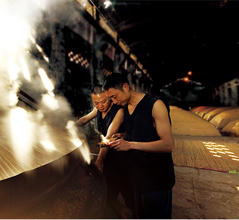
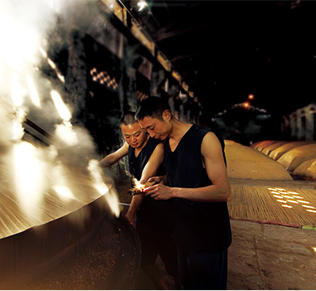
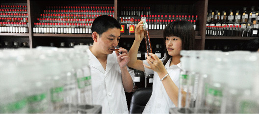
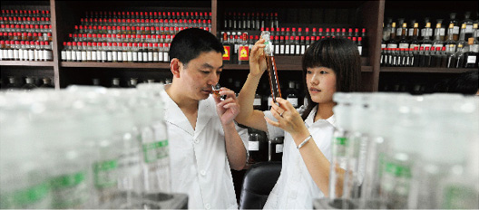

「国馆•中国道」选用的酒体，来自中国名酒、川酒六朵金花之一的沱牌舍得。沱牌舍得以生态酿酒、品质卓越著称，尤其是它的高端浓香型白酒，不仅储量位居行业前列，品质更树立了中国白酒的生态标杆。
「国馆•中国道」为什么选用沱牌舍得，尤其是它最为著名的泰安作坊窖龄老酒？理由很简单，极致的产品必须要有极致的包装、极致的品质、极致的口感、极致的体验……在我们看来，“极致”是对一瓶酒最高的尊重。在严苛的“顶级品质白酒八大标准”检视之下，我们酿出了「国馆•中国道」。

满墙葱茏欲滴的爬山虎，林中活泼肥硕的小斑鸠……这不是在森林公园，而是沱牌舍得生态酿酒工业园。作为中国名酒、川酒六朵金花之一，沱牌舍得在“中国白酒金三角”版图中占据着至关重要的位置。沱牌舍得所在地——遂宁市射洪县，位于巴蜀腹心地带，顶级白酒的黄金产区。射洪的土壤、水源、空气、微生物等天然优势，为沱牌舍得构筑了绝无仅有的酿酒生态循环体系。依托特有的生态优势，沱牌舍得打造了以生态产区、生态净水、生态原粮、生态制曲、生态窖藏等为核心的全生态酿酒产业链，完成了让生态酿酒理念贯穿产前、产中、产后的行业创举。


优质的“水”为「国馆•中国道」提供了有力的质量保障。经考证，沱牌舍得酿酒所用“沱泉水”发源于雪山，为裂隙承压经植物质矿化层与砂砾渗透上涌水，具有无色、无味，清澈透明、无悬浮物、水温稳定等优点，富含的多种有益于人体的微量元素。从唐时春酒始，柳树镇历代民众即以该泉水酿酒。

「国馆•中国道」的酿酒原粮来自东北，一年一熟的顶级原粮保证了顶级酒的最佳品质。「国馆•中国道」酒体由高粱、大米、糯米、玉米、小麦、大麦六种粮食纯粮酿制而成，与传统的五粮酿造相比，原料中增加了大麦。大麦中的麦芽糖酶、木糖酶、蛋白质分解酶以及被誉为“血管守护神”的原花青素，可以促进酿酒功能菌的生长及酶的活性，使酿出的酒香气更馥郁、口感层次更丰富。

曲药之于酿酒，好比药引之于中药，作为酿酒的发酵催化剂，曲药的品质直接影响酒的品质和风味，是整个酿酒过程的灵魂所在。「国馆•中国道」所用酒曲系沱牌舍得特制“黄金酒曲”。沱牌舍得坐拥观音故里的三千化境和四重生态，因无比稀有而被誉为“生物黄金”的极端酿酒微生物在这里大量聚集，沱牌舍得科研人员正是从这个巨大的天然“菌种库”中提取出了独有的珍稀菌群，制成不可复制的中国生态第一曲——“陈香曲”（专利号ZL200910058453.9），赋予了「国馆•中国道」“粮香陈香馨逸”的独特韵味。


“窖池老，酒才好”。「国馆•中国道」所用酒体来自沱牌舍得明清泰安作坊古窖池酿造的窖龄老酒。CCTV《国宝档案》栏目曾对泰安作坊遗址进行了深度的考察分析，对其酿酒历史之悠久给予了高度的赞叹。经考证，泰安作坊古窖池从明清始酿，历经数百年不间断持续酿造，沿用至今。在自然固态发酵过程中所产生的种类繁多的香味物质、逐渐向窖泥内深入渗透，形成丰富的天然香源和微生物生长基质。窖泥中的有益微生物伴随白酒酿造不断增殖繁衍，形成了庞大而不可完全探知的酿酒微生物群落及其生态体系，这些神秘的微生物群落，释放出大量活性物质和独特的呈香因子，使酒液自然产生一种令人心旷神怡、幽雅细腻、舒适愉快的陈香香气，最终成就了「国馆•中国道」中不可复制的醇厚滋味。


贮藏是白酒吐故纳新的重要过程。「国馆•中国道」贮存所用容器为“会呼吸的陶坛”——优质宜兴陶坛。陶坛由富含硒、铁、锌、钙等元素的天然矿土高温烧制而成，在贮存过程中，陶坛能自动生成原生态氧，促进酒体中有益物质的氧化和催陈；酒体在陶坛中呼吸吐纳、自然老熟，达成风味物质的缔合平衡，“老酒陈酿”的绝妙风味正是由此而来。
 

 


「国馆•中国道」由沱牌舍得酒业董事长、中国首届酿酒大师李家顺匠心酿制。“首届”是一项难以逾越的无上荣誉，中国13亿人中仅得32人获此殊荣，这代表着国家、业界对李家顺大师高超酿酒技艺的认可。
在白酒业界，李家顺是“中国生态酿酒”理念的首倡者与践行者。早在三十多年前，李家顺董事长就前瞻性地提出了生态酿酒的思路，身体力行地建立起中国首座生态酿酒工业园，在他的带领下，沱牌舍得步履不停、蓬勃发展，如今已成为中国生态酿酒的品质标杆与行业领袖。

品鉴，是证明酒体价值的最佳方式。依据详尽的品评步骤，环环深入，方能品味到「国馆•中国道」的酒体的精髓所在。国家酒类检验检测中心主任、中国品酒大师钟杰先生曾对「国馆•中国道」酒体进行过系统的品评，并给予了“陈香舒适、幽雅愉悦”的高度的评价。钟杰大师表示，通过“闻香、观色、品味、嗅杯”，可将「国馆•中国道」中的馥郁风味演绎至极。
“闻香”，可识得酒液中的粮香、窖香、米香、陈香、曲香、果香等复合香气；“观色”，可见杯中酒色无杂色、无沉淀、无悬浮，清亮透明，挂杯浓稠；“品味”，可感知「国馆•中国道」的绵甜醇厚、香味协调、余味爽净、回味悠长；“嗅杯”，可发现糟香、曲香、陈香在与氧气接触反应后的香气变化，颇有谐趣。
好酒来之不易，它是“天地人和”的智慧结晶，原粮、水源、曲药、窖池、大师……每一环节，都倾注着山水、时间、与人类的心血。「国馆•中国道」是一瓶好酒，但它的价值远不止一瓶酒那么简单。我们用极致的标准追求最卓越的品质，不仅为了品味的美好，还为了带给你品质的享受。当你斟上一杯「国馆•中国道」，轻抿、入喉、回味、沉醉，浓香激昂，酒香回荡，这杯酒从此具有了新的意义。